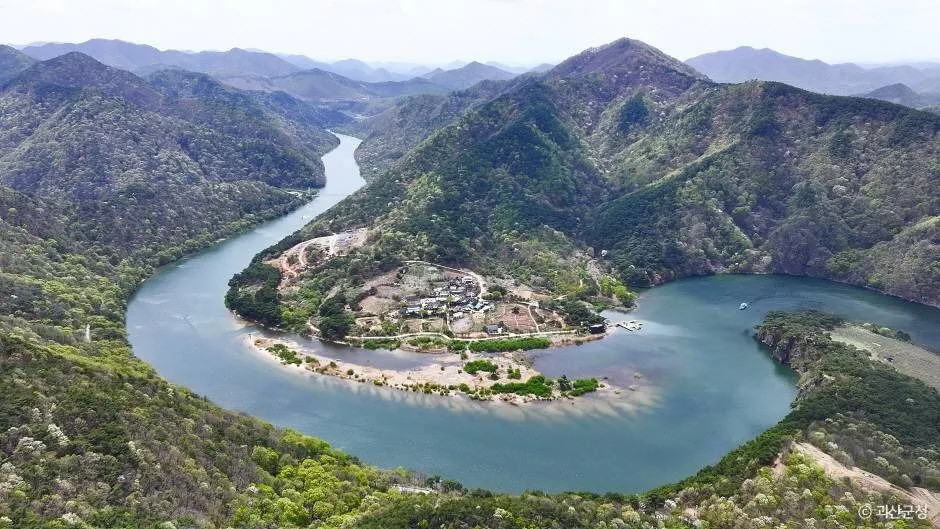
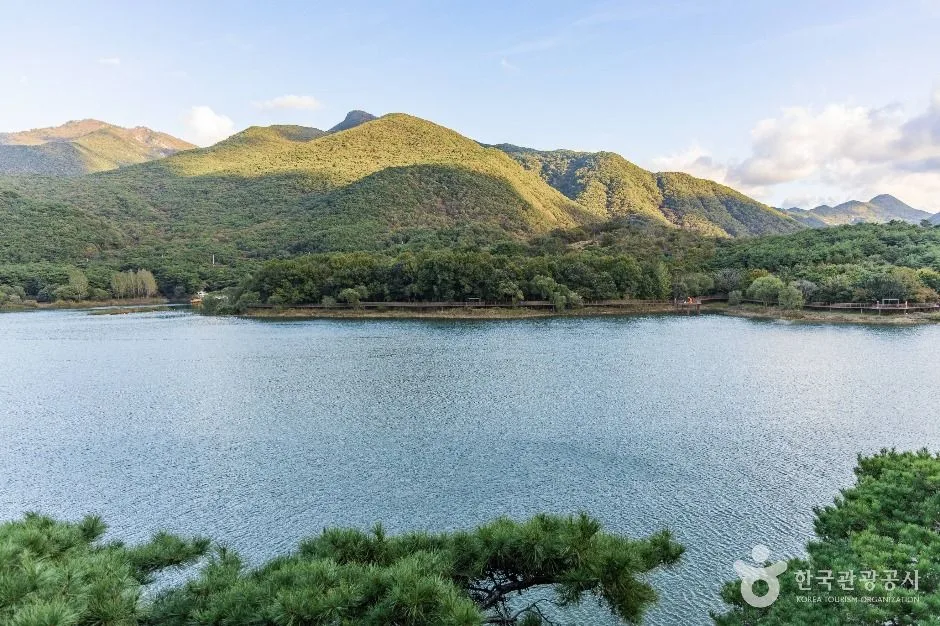
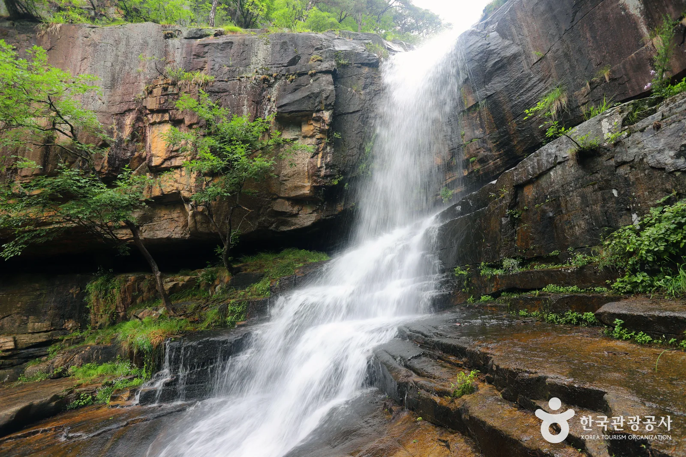
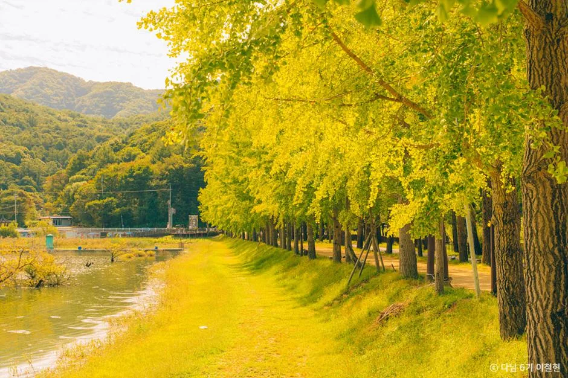
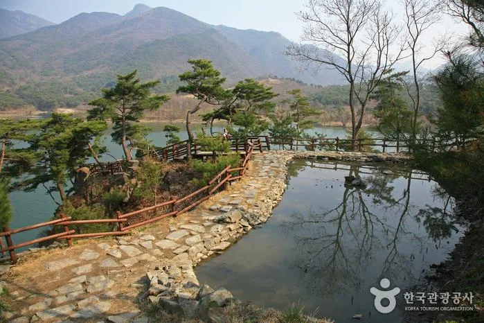
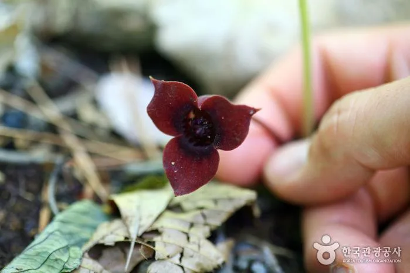
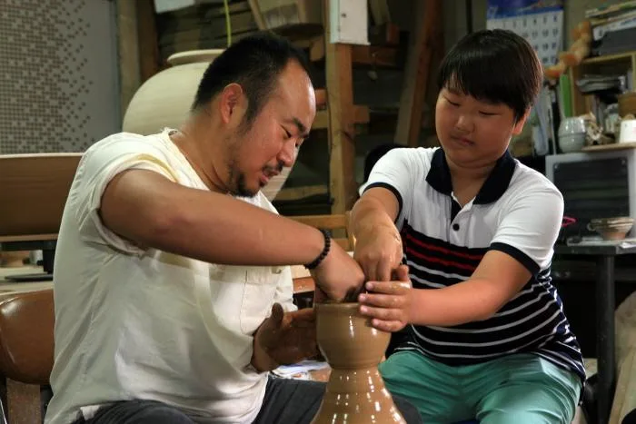

▲ 괴산호를 따라 이어지는 산막이옛길. 괴산고추축제와 함께 즐기기 좋은 괴산 대표 여행 코스다 ⓒ 한국관광공사

▲ 괴산고추축제가 열리는 괴산군을 감싸고 흐르는 괴산호. 낚시터이자 산막이옛길의 배경이 되는 호수다 ⓒ 한국관광공사
'대한민국 매운맛의 기준'을 슬로건으로 내건 2026 괴산고추축제가 9월 3일부터 6일까지 나흘간 괴산유기농엑스포광장과 괴산종합운동장 일원에서 열렸다. 올해로 24회째를 맞은 이 축제에는 작년보다 1만 1,000명 늘어난 32만 2,000여 명이 다녀갔고, 축제 기간 판매된 건고추는 6,044포(1포당 6kg)로 약 12억 원어치가 모두 팔렸다. 축제는 끝났지만, 괴산의 청결고추를 산지 가격에 사는 방법은 여전히 남아 있다. 축제 프로그램을 정리하고, 지금도 이어지는 직거래시장 이용법과 괴산 연계 여행 코스까지 함께 소개한다.
1. 나흘간 32만 명 — 무슨 프로그램이 있었나
축제는 체험형 프로그램을 전면에 내세웠다. '황금고추를 찾아라', '속풀이 고추난타', '고추물고기를 잡아라' 같은 참여형 체험부터 'Spicy 콘서트', '괴산 매운맛 대회'까지 다채롭게 구성됐다. 9월 5일에는 청소년페스티벌 '호루라기'와 제4회 유기농괴산가요제 본선이 이어져, 9개 팀이 대상 상금 1,000만 원을 놓고 경연을 벌였다. 9월 4일 오후 2시부터는 괴산전통시장 일원에서 치맥축제가 함께 열렸고, 저녁 7시에는 이찬원·진욱·송민준·곽지은이 출연한 개막 축하콘서트로 첫날을 장식했다. 고추 품평회와 세계고추전시회, 농특산물 직거래 장터도 나흘 내내 운영됐다.
| 일자 | 프로그램 |
|---|---|
| 9월 3일(목) | 축제 개막, 고추 품평회·세계고추전시회 시작 |
| 9월 4일(금) | 14:00 치맥축제(괴산전통시장), 19:00 개막 축하콘서트(이찬원·진욱·송민준·곽지은) |
| 9월 5일(토) | 청소년페스티벌 '호루라기', 제4회 유기농괴산가요제 본선(대상 상금 1,000만원) |
| 상시(3~6일) | 황금고추를 찾아라, 속풀이 고추난타, 고추물고기를 잡아라, Spicy 콘서트, 매운맛 대회, 농특산물 직거래 장터 |
2. 건고추 6,044포 완판 — 축제 직판장 결산

▲ 괴산의 산과 계곡. 청결고추 산지로 유명한 괴산은 산세가 수려해 사계절 여행지로도 꾸준히 소개된다 ⓒ 한국관광공사
축제 기간 온·오프라인으로 판매된 건고추는 총 6,044포(1포 6kg), 약 12억 원어치로 준비 물량이 모두 팔렸다. 올해 건고추 600g 판매가는 꼭지 유무에 따라 1만 6,000원~1만 8,000원 선이었는데, 군은 소비자 부담을 덜기 위해 지난해보다 근당 1,000원을 내려 책정했다. 소비자 입장에서는 시세보다 저렴하게 신선한 고추를 살 수 있고, 농가 입장에서는 중간 유통 단계 없이 안정적인 수익을 얻을 수 있다는 것이 이 직판 구조의 핵심이다.
3. 축제는 끝나도 — 괴산청결고추 직거래시장은 계속됩니다

▲ 괴산은 아이와 함께 가기 좋은 가을 여행지로도 꾸준히 꼽힌다 ⓒ 한국관광공사
축제를 놓쳤다고 해서 괴산 청결고추를 살 기회가 완전히 사라진 것은 아니다. 괴산군농산물유통센터 광장(괴산읍 문무로 12)에서는 괴산 장날인 3일·8일·13일·18일·23일·28일마다 오전 5시부터 7시까지 괴산청결고추 직거래시장이 별도로 열린다. 1991년 처음 문을 연 이 직거래시장은 35년 넘게 이어진 전국 대표 산지 직거래시장 가운데 하나로, 축제 직판장과 마찬가지로 중간 유통 없이 농가에서 소비자로 바로 이어지는 구조다. 이른 새벽 시간대에 운영되는 만큼 물량이 넉넉한 오전 시간에 방문하는 편이 좋다. 온라인으로 구매하고 싶다면 괴산군청이 운영하는 농가직거래 공식쇼핑몰 '괴산장터'도 이용할 수 있다. 괴산장터에서 확인 가능
📍 괴산청결고추 직거래시장 이용 팁
운영 시간이 오전 5~7시로 짧고 이른 만큼, 원하는 물량과 상태를 고르려면 개장 직후 방문하는 것이 유리하다. 현금 거래가 많은 재래시장 특성상 소액권을 준비해 가면 편리하며, 농가별로 건조 상태와 매운맛 정도가 조금씩 다르므로 눈으로 색과 꼭지 상태를 확인한 뒤 구매하는 것이 좋다.
4. 축제와 함께, 혹은 대신 — 괴산 연계 여행 코스

▲ 사오랑마을에서 산막이마을까지 약 4km 이어지는 산막이옛길. 괴산호를 끼고 걷는 대표 산책 코스다 ⓒ 한국관광공사
괴산은 고추 산지이자 산세가 수려한 여행지이기도 하다. 산막이옛길은 사오랑마을에서 산막이마을까지 이어지는 약 4km 옛길로, 투명한 괴산호 수면이 내려다보이는 구름다리와 스카이워크 구간이 하이라이트다. 물길을 따라 조금 더 북쪽으로 가면 연풍새재 옛길이 조령산 자락을 따라 이어지고, 인근 조령산체험마을에서는 한지 뜨기부터 도자기 공예까지 다양한 체험 프로그램을 즐길 수 있다.

▲ 조령산 자락을 따라 이어지는 연풍새재 옛길. 산막이옛길과 함께 묶어 걷기 좋은 코스다 ⓒ 한국관광공사

▲ 조령산체험마을에서는 한지 뜨기와 도자기 공예 등 전통 체험 프로그램을 운영한다 ⓒ 한국관광공사
5. 주차와 셔틀버스
축제 기간 괴산군은 괴산읍 대사리 35-2번지 일원 괴산미니복합타운 내 도로에 약 400면 규모의 임시주차장을 조성해 운영했다. 임시주차장과 괴산종합운동장 2번 게이트 구간에는 셔틀버스가 오전 10시부터 오후 8시까지 약 20분 간격으로, 버스 4~5대를 투입해 왕복 운행됐다. 축제 기간이 아니더라도 괴산청결고추 직거래시장을 방문할 계획이라면, 괴산군농산물유통센터 인근 도로 사정이 새벽 시간대에는 비교적 한산한 편이므로 주차 부담은 크지 않다.
✅ 괴산고추축제·청결고추 구매, 이것만은 확인하세요
· 2026 괴산고추축제는 9월 3~6일 일정으로 이미 종료(누적 방문객 32만 2,000여 명)
· 건고추 6,044포(1포 6kg) 완판, 600g 기준 1만 6,000~1만 8,000원
· 괴산청결고추 직거래시장은 괴산 장날(3·8·13·18·23·28일)마다 오전 5~7시 상시 운영
· 온라인 구매는 괴산군 공식쇼핑몰 '괴산장터'(gsjangter.go.kr) 이용 가능
· 산막이옛길·연풍새재·조령산체험마을 등 연계 여행지도 함께 둘러보기 좋음
6. 정리
2026 괴산고추축제는 나흘간 32만 명이 넘는 발길을 모으며 24회째 순항을 이어갔다. 축제 자체는 막을 내렸지만, 괴산청결고추 직거래시장은 매달 여섯 번의 장날마다 이른 새벽 문을 열어 괴산 고추를 산지 가격에 만날 기회를 계속 제공한다. 산막이옛길과 괴산호 일대의 가을 풍경까지 더하면, 축제 시즌이 지난 뒤에도 괴산을 찾을 이유는 충분하다.